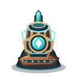
PRISM BASTION / ОРУЖИЕ 01
Игломёт
Атлас модульной постройки: база, 15 улучшений, 6 дополнительных накладок и все финальные кросс-пути.
Медные приводы · ледяной металл · янтарные челноки
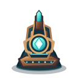
A · Швейная буря
Пять последовательных ступеней
T1 — Подшипники ветраa1
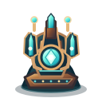
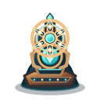
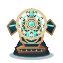
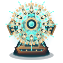
B · Алмазные иглы
Пять последовательных ступеней
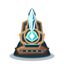
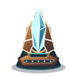
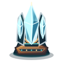
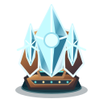
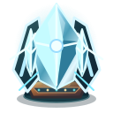
C · Рикошетный рой
Пять последовательных ступеней
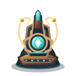
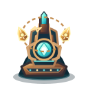
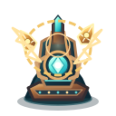
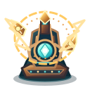
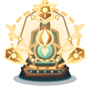
Вторичные накладки
Прозрачные символы поверх основного силуэта. Они не заменяют полноценные изображения башен.
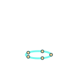
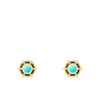
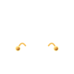
Шесть финальных сочетаний 5–2–0
Основной вид T5 + реальная накладка второй ветки T2. Ни одна накладка не перекрывает центр основного механизма.